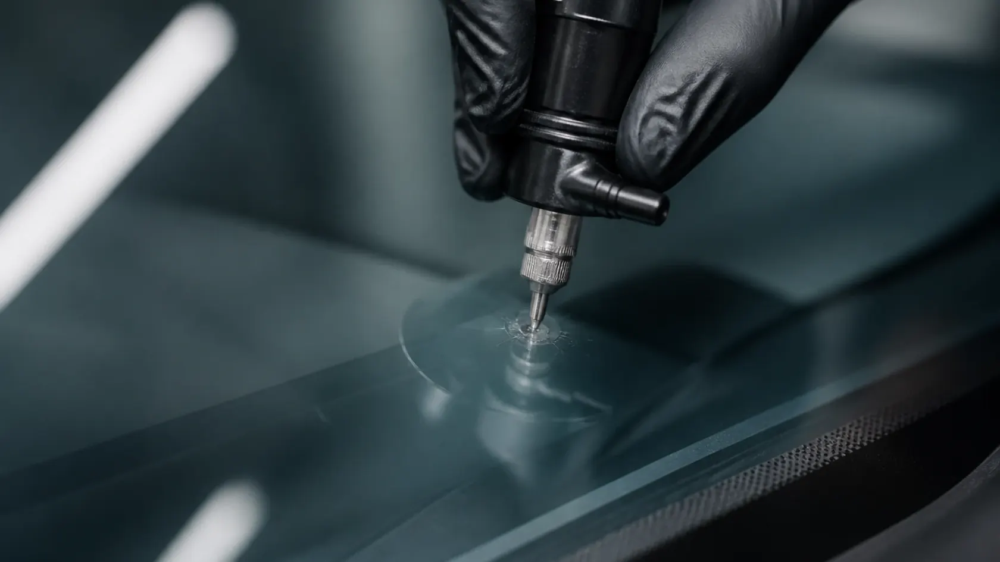
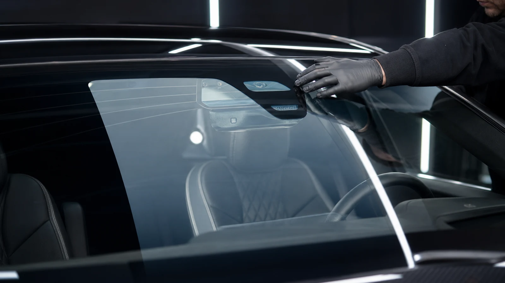
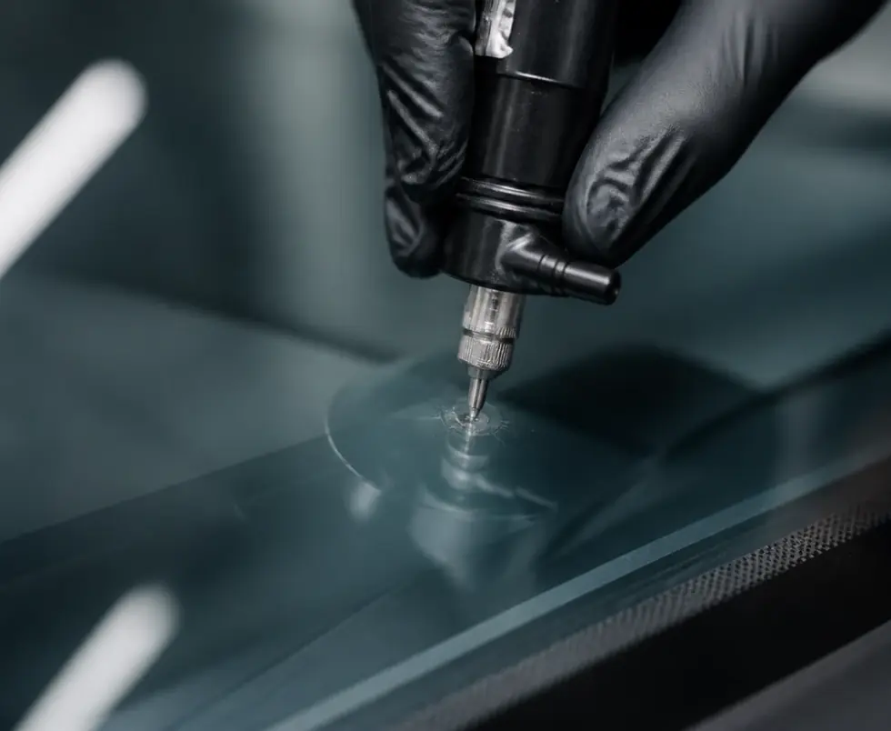
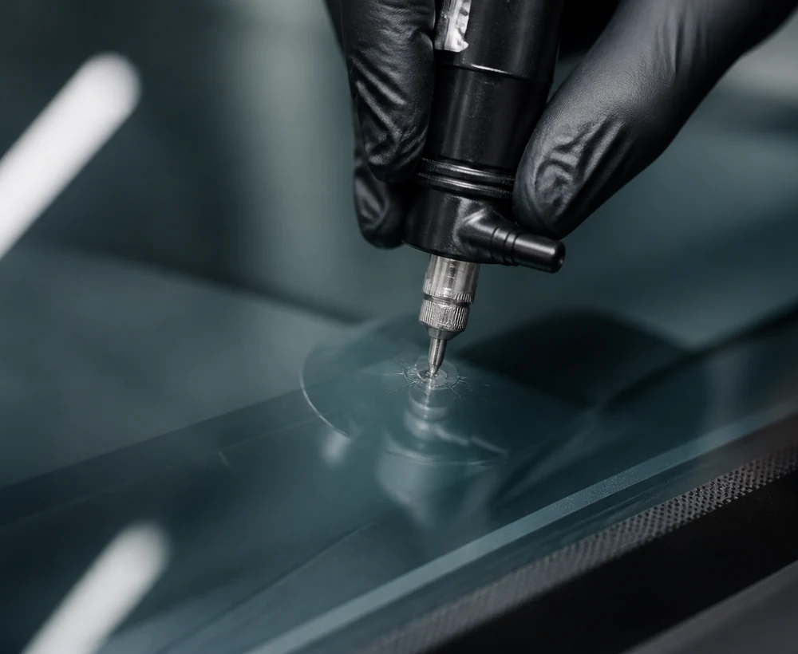
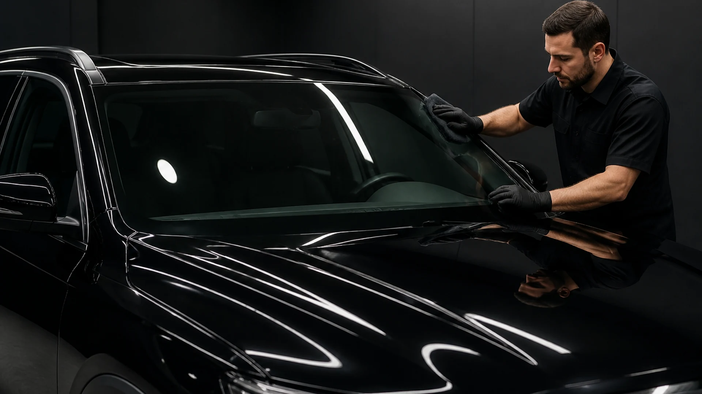

Bullseye
A rounded impact pattern with a visibly concentrated central damage zone.

Explore how stone chips, small impact marks and developing cracks are assessed before deciding whether windshield repair may be appropriate.
Windshield repair generally focuses on localised damage where the glass remains structurally suitable for a repair procedure. A professional assessment should confirm whether the specific damage qualifies.
Not every chip or crack behaves the same. Impact shape, contamination, location and the distance from the windshield edge can all affect the recommended next step.

Windshield repair is a focused process designed around the damaged area rather than replacing the entire glass assembly.
The visible shape of an impact can help describe the damage, but the final repair decision should still be made after proper inspection.
A rounded impact pattern with a visibly concentrated central damage zone.
An impact point with several short crack lines extending outward from the centre.
A more complex impact combining several visual damage characteristics in one area.
A visible crack line whose length and position need to be considered before repair.
Damage positioned close to the perimeter of the windshield installation.
Damage directly within the driver's primary viewing area may need extra consideration.
A technical view of the windshield areas that can influence how local damage is assessed.

The centre of the impact can reveal the shape, depth and type of the original glass damage.

The visible impact is checked for shape, depth, cracking and position.

Compatible repair resin is introduced into the damaged area as part of the repair process.

The repaired zone is finished and the glass is reviewed before the work is considered complete.
Select an area to see why visually similar windshield damage can lead to different repair decisions.


The overall dimensions and spread of the damaged area form part of repairability assessment.
When a windshield is considered suitable for repair, the procedure focuses on preserving the existing glass rather than replacing it.
Repair focuses on the damaged area instead of removing the entire windshield.
Suitable repair preserves the windshield already fitted to the vehicle.
Repair is intended to stabilise local damage and improve the appearance of the affected area.
A local repair can involve less glass handling than a full windshield replacement.


Common questions about local windshield damage and the factors that can influence repair.
No. The type, size, depth and location of the damage should be evaluated before a repair method is selected.
Visible spreading can change the repair assessment. The length, direction and position of the crack should be considered.
Repair may improve the appearance of local damage, but the final visual result can vary depending on the original impact and condition of the glass.
Yes. Edge proximity can be an important part of repairability assessment because the perimeter is part of the installed windshield assembly.
The final recommendation should be confirmed directly with the selected auto glass provider after inspection of the actual windshield damage.

Send details about the damage and use the enquiry form to start with the right auto glass service.
Send an enquiry